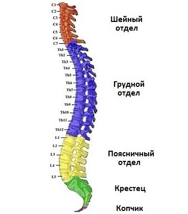

erebunimed.com
erebunimed.com
Компьютерная томография - это неинвазивная диагностическая процедура визуализации, которая использует комбинацию рентгеновских лучей и компьютерных технологий для получения горизонтальных или осевых изображений (часто называемых срезами) тела. КТ показывает детальные изображения любой части тела, включая кости, мышцы, жир и органы. КТ изображения более подробные, чем стандартные рентгеновские снимки.
В стандартных рентгеновских лучах луч энергии направлен на исследуемую часть тела. Пленка позади части тела фиксирует изменения энергетического пучка после его прохождения через кожу, кости, мышцы и другие ткани. Хотя часто хватает стандартного рентгеновского снимка, больше подробностей о внутренних органах и других структурах становится доступно при КТ.
При компьютерной томографии рентгеновский луч движется вокруг тела. Это позволяет сделать много разных снимков одного и того же органа или структуры. Рентгеновская информация отправляется на компьютер, который интерпретирует рентгеновские данные и отображает их в двухмерной (2D) форме на мониторе.
КТ может быть сделано с или без «контраста». Контрастность относится к веществу, введенного перорально или внутривенно (в/в), что делает конкретный исследуемый орган или ткань более отчетливыми. Контрастные обследования могут потребовать прибыть в течение определенного периода времени до процедуры. Ваш врач уведомит вас об этом до процедуры.
КТ позвоночника может предоставить более подробную информацию о позвонках (костях позвоночника) и других структурах и тканях позвоночника, чем стандартные рентгеновские снимки позвоночника, что дает больше информации о травмах и / или заболеваниях позвоночника.
Другие связанные процедуры, которые могут использоваться для диагностики проблем позвоночника, включают рентгенографию, магнитно-резонансную томографию (МРТ) позвоночника, миелографию и позитронно-эмиссионную томографию (ПЭТ).
Анатомия позвоночника

Позвоночник состоит из 33 позвонков, которые разделены на отдельные области.
Шейный отдел состоит из 7 позвонков на шее.
Грудная область состоит из 12 позвонков в области грудной клетки.
Поясничная область состоит из 5 позвонков в нижней части спины.
Крестец имеет 5 маленьких сросшихся позвонков.
4 копчиковых позвонка сливаются в одну кость, называемую копчиком.
Спинной мозг, основная часть центральной нервной системы, расположен внутри позвоночника в позвоночном канале и простирается от основания черепа до верхней части нижней части спины. Спинной мозг окружен костями позвоночника и оболочками, содержащим спинномозговую жидкость. Спинной мозг передает сенсорные и двигательные сигналы в мозг и обратно и контролирует многие рефлексы.
В каких случаях делают компьютерную томографию позвоночника?
КТ позвоночника может быть выполнена для оценки наличия грыжи межпозвоночного диска, травматических изменений, опухолей и других поражений, таких как spina bifida (тип врожденного дефекта позвоночника), пороков развития кровеносных сосудов, особенно когда другой тип обследования, такой как рентген или физикальное обследование, не является окончательным. КТ позвоночника может также использоваться для оценки эффектов хирургического лечения позвоночника.
У вашего врача могут быть другие причины рекомендовать компьютерную томографию позвоночника.
Каковы риски компьютерной томографии позвоночника?
Вы можете спросить своего врача о количестве радиации, используемой во время процедуры КТ, и рисках, связанных с вашей конкретной ситуацией. Рекомендуется вести учет вашей прошлой истории облучения, например, предыдущих КТ и других видов рентгеновских лучей, чтобы вы могли сообщить об этом своему врачу. Риски, связанные с облучением, могут быть связаны с совокупным количеством рентгенологических исследований и / или обработок в течение длительного периода времени.
Если вы беременны или подозреваете, что можете быть беременны, вы должны сообщить об этом своему врачу. Облучение во время беременности может привести к врожденным дефектам. Если вам необходимо сделать КТ позвоночника, будут предприняты особые меры предосторожности, чтобы свести к минимуму радиационное воздействие на плод.
Кормящим матерям следует подождать 24 часа после введения контрастного вещества, прежде чем возобновить грудное вскармливание.
При использовании контрастного вещества существует риск аллергической реакции на препарат. Пациенты, которые имеют аллергию или чувствительны к лекарствам, должны уведомить своего врача. Исследования показывают, что 85 процентов населения не будут испытывать неблагоприятную реакцию от йод-содержащего контраста; тем не менее, вам нужно будет сообщить своему врачу, если у вас когда-либо возникала реакция на какие-либо контрастные вещества и / или проблемы с почками.
Пациенты с почечной недостаточностью или другими проблемами почек должны уведомить своего врача. В некоторых случаях контрастные вещества могут вызвать почечную недостаточность. Кроме того, пациенты, принимающие метформин для лечения сахарного диабета, должны предупредить своего врача перед контрастным внутривенным введением, поскольку это может вызвать редкое состояние, называемое метаболическим ацидозом. Если вы принимаете метформин, вас попросят прекратить его прием во время процедуры, а затем подождите 48 часов после инъекции. Может потребоваться анализ крови, чтобы проверить функцию почек, прежде чем вы снова сможете принимать метформин.
Могут быть другие риски в зависимости от вашего конкретного состояния здоровья. Обязательно обсудите любые проблемы с вашим врачом до процедуры.
Как мне подготовиться к КТ позвоночника?
Если у вас компьютерная ангиография (КА), вам будут даны конкретные инструкции при записи на прием.
МЕРЫ ПРЕДОСТОРОЖНОСТИ : Если вы беременны или думаете, что беременны, проконсультируйтесь с врачом перед назначением обследования.
ОДЕЖДА : Вас могут попросить переодеться. Пожалуйста, удалите весь пирсинг и оставьте все драгоценности и ценные вещи дома.
КОНТРАСТНЫЕ СРЕДЫ : КТ проводится с контрастным веществом и без него. Контрастные средства улучшают способность рентгенолога просматривать изображения внутренней части тела.
Если у вас есть проблемы с функцией почек, пожалуйста, сообщите. Возможно, вы сможете провести сканирование без контрастного вещества или пройти альтернативное обследование.
Вас попросят подписать форму согласия, в которой будут подробно описаны риски и побочные эффекты, связанные с введением контрастного вещества через внутривенный катетер.
АЛЛЕРГИЯ : Пожалуйста, сообщите представителю центра при планировании вашего КТ, если у вас была аллергическая реакция на любой контрастный препарат. Внутривенный контраст не будет применяться, если в прошлом у вас была тяжелая или анафилактическая реакция на какие-либо контрастные вещества. Любые известные реакции на контрастные вещества следует обсудить с вашим личным врачом.
ЕСТЬ / ПИТЬ : Если ваш врач назначил компьютерную томографию без контраста, вы можете есть, пить и принимать предписанные лекарства до обследования. Если ваш врач заказал компьютерную томографию с контрастом, ничего не ешьте за три часа до компьютерной томографии. Вам рекомендуется пить прозрачные жидкости. Вы также можете принять предписанные лекарства до обследования.
ДИАБЕТ : Диабетикам следует съесть легкий завтрак или обед за три часа до времени сканирования. В зависимости от ваших пероральных лекарств от диабета, вас могут попросить прекратить использование лекарства в течение 48 часов после компьютерной томографии.
В зависимости от вашего состояния здоровья ваш врач может запросить другую специальную подготовку.
Что происходит во время КТ позвоночника?
elcaminohealth.org
КТ может проводиться амбулаторно или как часть вашего пребывания в больнице. Процедуры могут различаться в зависимости от вашего состояния и практики вашего врача.
Как правило, компьютерная томография следует за этим процессом: - Вас могут попросить переодеться. Пожалуйста, удалите весь пирсинг и оставьте все драгоценности и ценные вещи дома. - Если вы хотите сделать процедуру с контрастом, внутривенно будет введен катетер в руку или кисть для инъекции контрастного вещества. - Вы будете лежать на столе для сканирования, который скользит в большом круглом отверстии сканирующего устройства. Подушки и ремни могут быть использованы для предотвращения движения во время процедуры. - Специалист будет в другой комнате, где расположены элементы управления сканером. Тем не менее, вы будете в поле зрения специалиста через окно. Динамики внутри сканера позволят специалисту общаться и слышать вас. - Когда сканер начнет вращаться вокруг вас, рентгеновские лучи будут проходить через тело в течение короткого промежутка времени. Вы услышите щелкающие звуки, которые являются нормой. - Рентгеновские лучи, поглощенные тканями тела, будут обнаружены сканером и переданы на компьютер. Компьютер преобразует информацию в изображение для интерпретации рентгенологом.
Будет важно, чтобы вы оставались спокойными во время процедуры. Во время процедуры вас могут попросить задержать дыхание в разное время.
Если для вашей процедуры используется контрастное вещество, вы можете почувствовать некоторые эффекты, когда препарат вводится. Эти эффекты включают чувство покраснения, соленый или металлический привкус во рту, кратковременную головную боль или тошноту и / или рвоту. Эти эффекты обычно длятся несколько минут.
Вы должны уведомить специалиста, если у вас возникли проблемы с дыханием, потливость, онемение или учащенное сердцебиение.
После завершения сканирования стол выскользнет из сканера.
Хотя сама процедура КТ не вызывает боли, необходимость оставаться на месте в течение всей процедуры может вызвать некоторый дискомфорт или боль, особенно в случае недавней травмы или инвазивной процедуры, такой как операция. Специалист КТ будет использовать все возможные меры комфорта и завершит процедуру как можно быстрее, чтобы минимизировать любой дискомфорт или боль.
Что происходит после компьютерной томографии?
Если во время процедуры использовались контрастные вещества, вы можете в течение некоторого времени подвергаться мониторингу любых побочных эффектов или реакций на контрастные вещества, таких как зуд, припухлость, сыпь или затруднение дыхания. Сообщите рентгенологу или вашему врачу, если у вас возникнут какие-либо из этих симптомов.
В противном случае после компьютерной томографии позвоночника особого ухода не требуется. Вы можете возобновить обычную диету и занятия, если только ваш врач не порекомендует вам другое.
Ваш врач может дать вам дополнительные или альтернативные инструкции после процедуры, в зависимости от вашей конкретной ситуации.